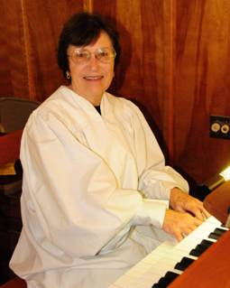

Minister at Wesley Chapel United Methodist Church
Rev. Bryant has been at Wesley Chapel since 2011. John completed his B.A. in Religion at Davidson College and received his M.Div. from Duke Divinity School in 2011. He also had internships at churches in Alabama, North Carolina, and Washington DC. He was commissioned as a Provisional Elder in 2011 at Western North Carolina Annual Conference.
John enjoys hiking and playing Ultimate Frisbee and is an avid sports fan. He also enjoys spending time with his wife Kathy.
 Dr. Jean Raines
Professor of Music, Pfeiffer University
Organist/Choir Director, Wesley Chapel United Methodist Church
Dr. Raines joined the faculty of Pfeiffer University in 1980 and she has been organist/choir director at Wesley Chapel since 1981. She also teaches private piano and woodwind lessons to elementary through high school aged students in the community. Dr. Raines holds the Bachelor of Science in Education degree with certification in music and mathematics from the University of Memphis, the Master of Music Education degree from the University of Memphis, and the Ph.D. in applied clarinet-theory-literature from Michigan State University.
Janice Jones
Assistant Organist at Wesley Chapel United Methodist Church
Janice is a member of the choir and plays the organ when Dr. Raines is not available.